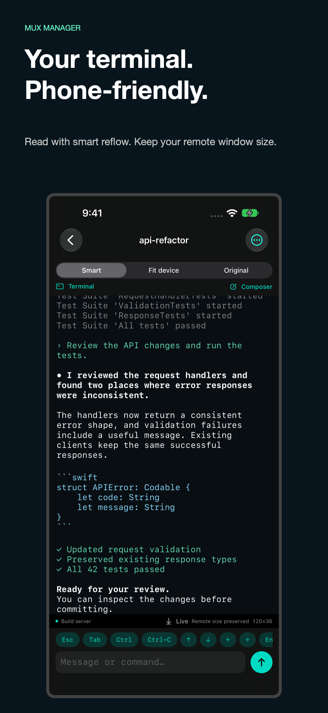
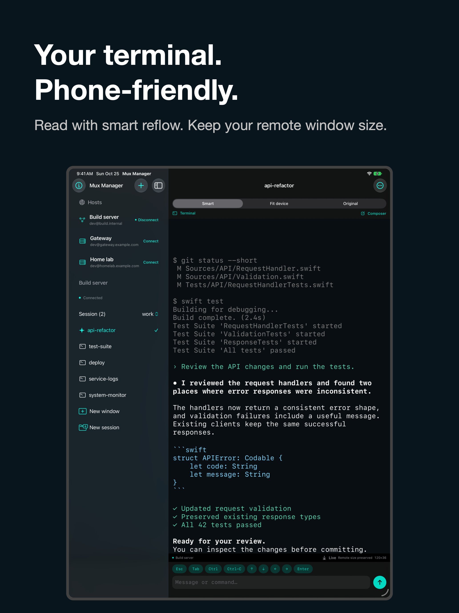

SSH + tmux · iPhone + iPad
Your windows.
Your workflow.
Anywhere.
Check on a build. Read a coding assistant’s response. Send the next command. Mux Manager brings the tmux sessions already running on your computers to a native mobile interface.
Explore the sourceGet startedOpen source under the MIT license. Requires SSH and tmux 3.2 or later on your host.

Read comfortably
Smart wraps text, shell columns, and long lines to your reading width while preserving colors. Your remote window keeps its size.
Choose your view
Original preserves the terminal grid. Fit device explicitly resizes the remote window. Zoom text and scroll through history.
Keep moving
Browse sessions and windows by name. Draft commands in a native input box, use direct keys, and hide the keyboard to read more.
Connect your way
Save SSH connections, generate or import keys, and reach an inside host through a saved bastion.
Pick up on iPad
Use the sidebar and terminal together. Connections and key metadata sync automatically with private CloudKit; credentials use iCloud Keychain.
No remote helper
Uses SSH and tmux control mode. Best-effort zsh/bash completion reads the screen and returns text to the composer without installing anything.
More room for your remote work.
On iPad, keep your hosts and windows alongside the terminal. Sample screenshots show fictional hosts and terminal content.
